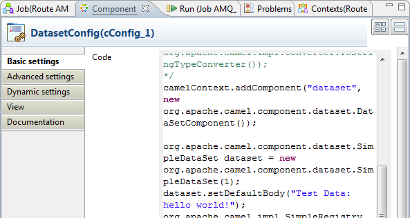
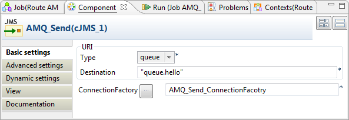
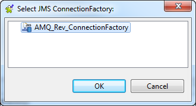

|
Component Family |
Messaging | |
|
Function |
cJMS allows messages to be sent to, or consumed from, a JMS Queue or Topic. | |
|
Purpose |
cJMS is used to send messages to, or consume messages from, a JMS Queue or Topic. | |
|
|
URI/Type |
Select the messaging type, either queue or topic. |
|
|
URI/Destination |
Type in a name for the JMS queue or topic. |
| ConnectionFactory | Click the three-dot button and select a JMS connection factory to be used for handling messages or enter the name of the corresponding cJMSConnectionFactory component directly in the field. | |
| Advanced settings | URI Options | Set the optional arguments in the corresponding table. Click [+] as many times as required to add arguments to the table. Then click the corresponding value field and enter a value. See the site http://camel.apache.org/jms.html for available URI options. |
|
Usage |
cJMS can be a start, middle or end component in a Route. | |
|
Limitation |
n/a | |
In this scenario, a cJMS component sends messages from the local file system to a message queue in one sub-route, and the messages are then consumed by another cJMS component in the other sub-route.

From the Palette, expand the Context folder, and drop a cJMSConnectionFactory component onto the design workspace to specify the JMS connection factory for handling messages.
From the Messaging folder, drop one cFile and two cJMS components onto the design workspace.
From the Processor folder, drop a cProcessor component onto the design workspace.
Connect the cFile component to a cJMS component using a Row > Route connection as the message producer sub-route.
Connect the other cJMS component to the cProcessor component using a Row > Route connection as the message consumer sub-route.
Label the components properly for better identification of their functionalities.
Double-click the cJMSConnectionFactory component to display its Basic settings view in the Component tab.

From the MQ Server list, select an MQ server. In this use case, we use the default ActiveMQ server to handle the messages.
In the Broker URI field, type in the URI of the message broker. Here we simply use the default URI "vm://localhost?broker.persistent=false".
In the message producer sub-route, double-click the cFile component to display its Basic settings view.

Define the properties of the cFile component.
In this use case, simply specify the path to the folder that holds the source file to be sent as electronic message, and leave the other parameters as they are.
Double-click the cJMS component labeled Message_producer to display its Basic settings view.

From the Type list, select queue to send the messages to a JMS queue.
In the Destination field, type in a name for the JMS queue,
"queue.hello"in this use case.Double-click the [...] button next to ConnectionFactory. Select the JMS connection factory that you have just configured in the dialog box and click OK. You can also enter the name of the cJMSConnectionFactory component directly in the field.

Switch to the message consumer sub-route, and double click the cJMS component labeled Message_consumer to display its Basic settings view.

Configure the message consumer using exactly the same parameters as in the message producer.
Double-click the cProcessor component to display its Basic settings view.

In the Code area, customize the code as shown below to display the file names of the consumed messages on the Run console.
System.out.println("Message consumed: "+ exchange.getIn().getHeader("CamelFileName"));Press Ctrl+S to save your Routes.
Click the Code tab at the bottom of the design workspace to have a look at the generated code.


In the partially shown code, a message route is built
fromtheFile_source.totheMessage_producerwhich then sends the message to a message queue via a broker identified byvm://localhost?broker.persistent=false. The messagefromtheMessage_consumeris processed bycProcessor_1.Click the Run button in the Run view to launch the execution of your Route. You can also press F6 to execute it.
RESULT: The message is received by the consumer, as shown on the Run console.

In this scenario, a local transaction with three steps is performed to send, test and consume a JMS message:
The first Route is used to send a "hello world!" message to feed the queue.hello JMS queue.
The second Route is used to test the received JMS message. This message is redelivered six times to the queue.hello queue and is then moved to the Dead Letter JMS queue. The Route is programmed to throw an exception every time an exchange is processed by the Route.
The last Route is used to consume the "hello world!" message from the Dead Letter JMS queue.

Procedure 3.1. Dropping and linking the components
From the Palette, drop the five following components onto the design workspace: one cJMSConnectionFactory, one cConfig, one cMessagingEndpoint, one cJMS and one cProcessor component.
Connect the cMessagingEndpoint component to the cJMS using a Row > Route connection.
Connect the cJMS component to the cProcessor component using a Row > Route connection.
Procedure 3.2. Configuring the components
Double-click the cJMSConnectionFactory component labelled AMQ_Send_ConnectionFactory to display its Basic settings view in the Component tab.

From the MQ Server list, select an MQ server. In this use case, we use the default ActiveMQ server to handle the messages.
In the Broker URI field, type in Active MQ's default URI of the localhost server: "tcp://localhost:61616".
![[Note]](../images/note.png)
When using ActiveMQ to handle messages between different Routes, you need to launch the ActiveMQ server before executing the Routes. For more information on installing and launching ActiveMQ server, see the section about installing Apache ActiveMQ in the Talend ESB Installation Guide.
Double-click the cConfig component, which is labelled DatasetConfig, to display its Basic settings view in the Component tab and set its parameters.
Write a piece of code in the Code field to register the dataset instance hello into the registry, as shown below.
org.apache.camel.component.dataset.SimpleDataSet dataset = new org.apache.camel.component.dataset.SimpleDataSet(1); dataset.setDefaultBody("Test Data: hello world!"); org.apache.camel.impl.SimpleRegistry registry = new org.apache.camel.impl.SimpleRegistry(); registry.put("hello",dataset); camelContext.setRegistry(registry);Double-click the cMessagingEndpoint component, which is labelled SimpleDatasetGen, to display its Basic settings view in the Component tab. and set its parameters.

In the URI field, enter dataset:hello between the quotation marks.
Double-click the cJMS component labeled AMQ_Send to display its Basic settings view.
From the Type list, select queue to send the message to a JMS queue.
In the Destination field, type in a name for the JMS queue, "queue.hello" in this use case.
Double-click the [...] button next to ConnectionFactory. Select the JMS connection factory that you have just configured in the dialog box and click OK. You can also enter the name of the cJMSConnectionFactory component directly in the field.

Double-click the cProcessor component labelled PrintSendMsg to display its Basic settings view in the Component tab, and customize the code in the Code area to display the sent message intercepted on the console.
System.out.println("AMQ Send: "+ exchange.getIn().getBody(String.class));

Procedure 3.4. Dropping and linking the components
From the Palette, drop the four following components onto the design workspace: one cJMS, two cProcessor components and one cJMSConnectionFactory.
Connect the cJMS component to the first cProcessor using a Row > Route connection.
Connect the first cProcessor component to the second cProcessor component using a Row > Route connection.
Procedure 3.5. Configuring the components
Double-click the cJMSConnectionFactory component labelled AMQ_Rev_ConnectionFactory to display its Basic settings view in the Component tab.

From the MQ Server list, select an MQ server. In this use case, we use the default ActiveMQ server to handle the messages.
Select the Use transaction check box.
In the Broker URI field, type in Active MQ's default URI of the localhost server: "tcp://localhost:61616".
Double-click the cJMS component labeled AMQ_Rev to display its Basic settings view.
From the Type list, select queue to send the messages to a JMS queue.
In the Destination field, type in a name for the JMS queue, "queue.hello" in this use case.
Double-click the [...] button next to ConnectionFactory. Select the JMS connection factory that you have just configured in the dialog box and click OK. You can also enter the name of the cJMSConnectionFactory component directly in the field.
Double-click the first cProcessor component labelled PrintRevMsg to display its Basic settings view in the Component tab, and customize the code in the Code area to display the received message intercepted on the console.
System.out.println("AMQ Receive: "+ exchange.getIn().getBody(String.class));Double-click the second cProcessor component labelled ThrowEx to display its Basic settings view in the Component tab, and customize the code in the Code area to throw the Force fail exception every time an exchange is processed by the route.
throw new Exception("Force fail")
Procedure 3.6. Executing the Route
Click the Run button in the Run view to launch the execution of your Route. You can also press F6 to execute it.
RESULT: The "hello world!" message is tested and a rollback transaction is performed. Once the message redelivery attempts exceeds six times, the pending message is sent to the Dead Letter JMS Queue.
Procedure 3.7. Dropping and linking the components
From the Palette, drop the three following components onto the design workspace: one cJMSConnectionFactory, one cJMS and one cProcessor component.
Connect the cJMS component to the cProcessor component using a Row > Route connection.
Procedure 3.8. Configuring the components
Double-click the cJMSConnectionFactory component to display its Basic settings view in the Component tab.

From the MQ Server list, select an MQ server. In this use case, we use the default ActiveMQ server to handle the messages.
In the Broker URI field, type in Active MQ's default URI of the localhost server: "tcp://localhost:61616".
Double-click the cJMS component labeled DeadLetterQueueJMS to display its Basic settings view.

From the Type list, select queue to send the messages to a JMS queue.
In the Destination field, type in a name for the JMS queue, "ActiveMQ.DLQ" in this use case (the default Dead Letter Queue in ActiveMQ).
Double-click the [...] button next to ConnectionFactory. Select the JMS connection factory that you have just configured in the dialog box and click OK. You can also enter the name of the cJMSConnectionFactory component directly in the field.

Double-click the cProcessor component labelled PrintMsg to display its Basic settings view in the Component tab, and customize the code in the Code area to display the received message intercepted on the console.
System.out.println("AMQ Receive: "+ exchange.getIn().getBody(String.class));